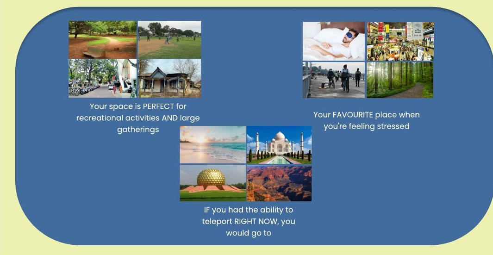
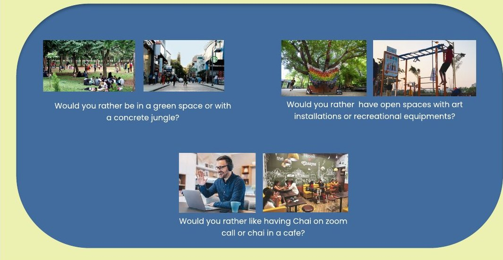
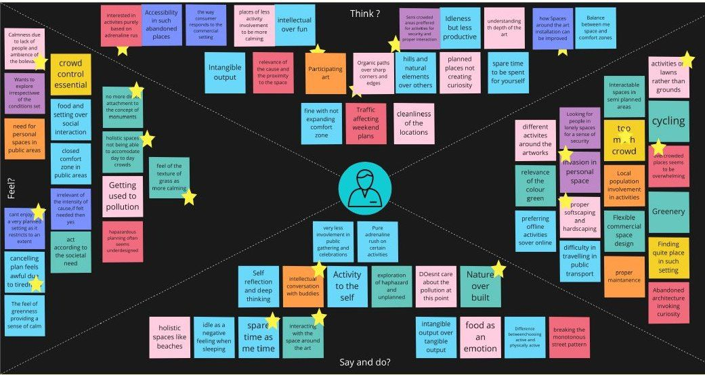
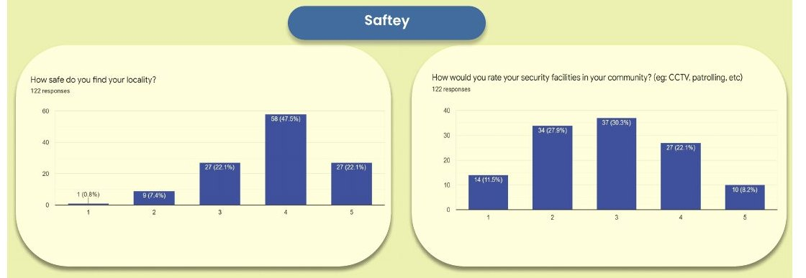
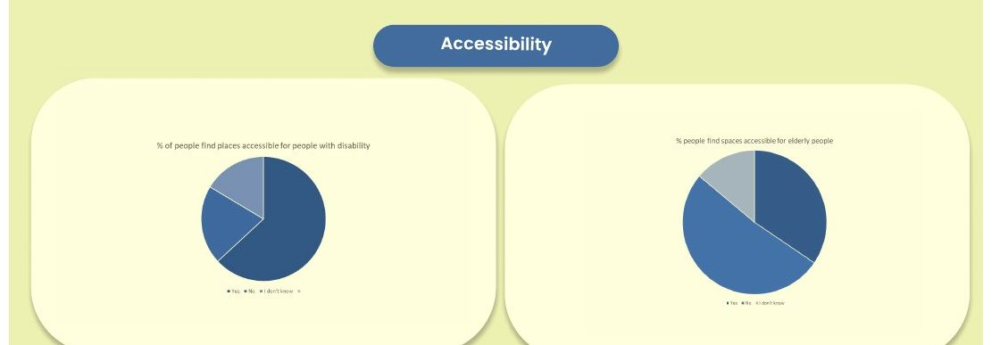
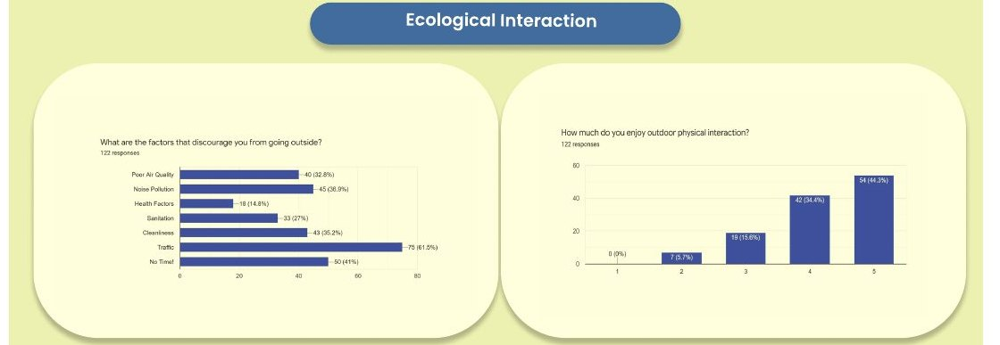

Interviews with pictures, then a survey at scale
Semi-structured interviews followed the lines of inquiry. Instead of plain questions, participants got pictorial cues and playful either-or choices, followed by probing questions.


Making sense of the answers
Interviews were sorted on an empathy map because it splits data into psychological and physical aspects, is quick, and lets narratives emerge organically. A table of observation then put lines of inquiry along one axis and Feeling, Thinking, Doing and Seeing along the other.

Survey signals

Rarely a prominent worry
Across genders safety was not seen as a prominent concern, though the feeling of safety is not strongly driven by regular security measures.

Mostly unaware or unconvinced
Most participants either do not know or do not consider spaces in their community accessible for disabled and elderly people.

Want it, but time and traffic
People who enjoy outdoor activity most still stay in because of traffic and time management.